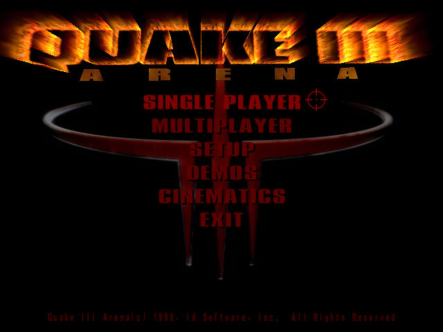
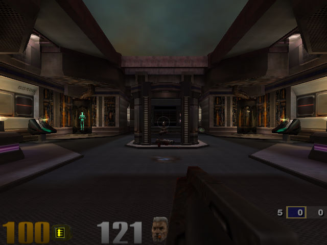

名稱：雷神之鎚3：競技場 (Quake 3: Arena，英文版)
簡介：id Sotfware 1999年出品的第一人稱射擊遊戲，由Activision代理發行。2000年推出
多人連線專用的「團隊競技場（Team Arena）」資料片，2001年則推出整合資料片的
「黃金版（Gold）」 [待補]。


保護：光碟+序號（jhg3aacaw7rsgt2r）
檔案：q3pointrelease_132.rar = 1.32更新檔
Quake III Arena 1.32c.rar = 1.32c更新檔（先更新至1.32）